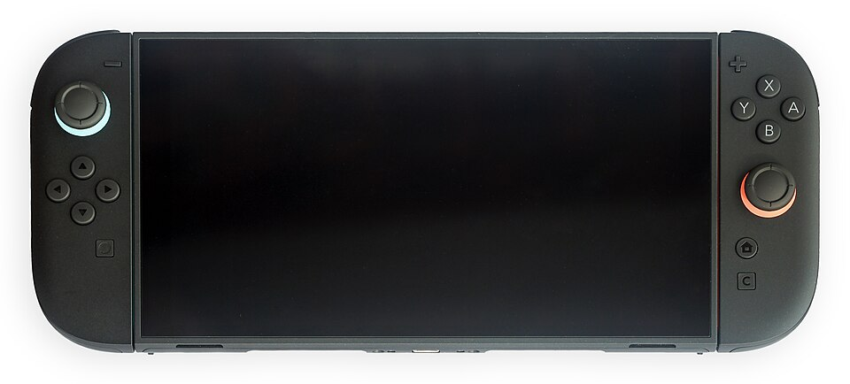
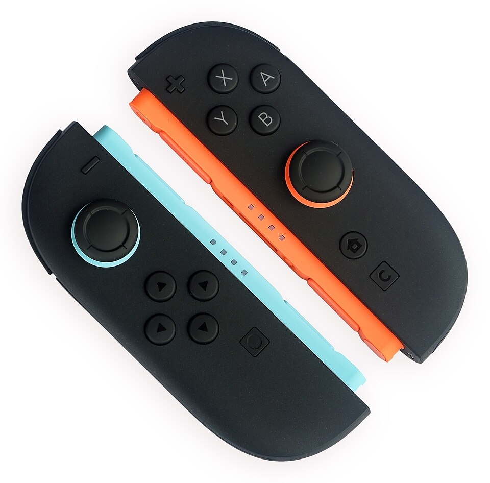
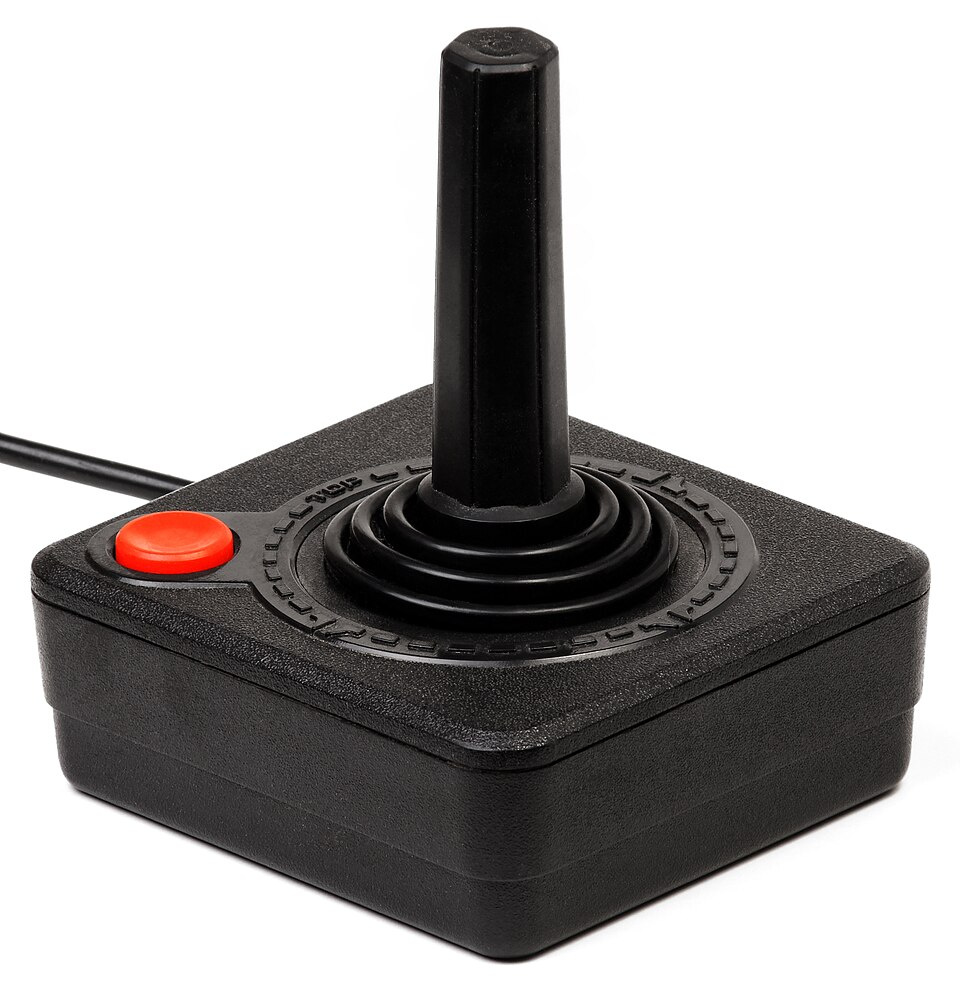
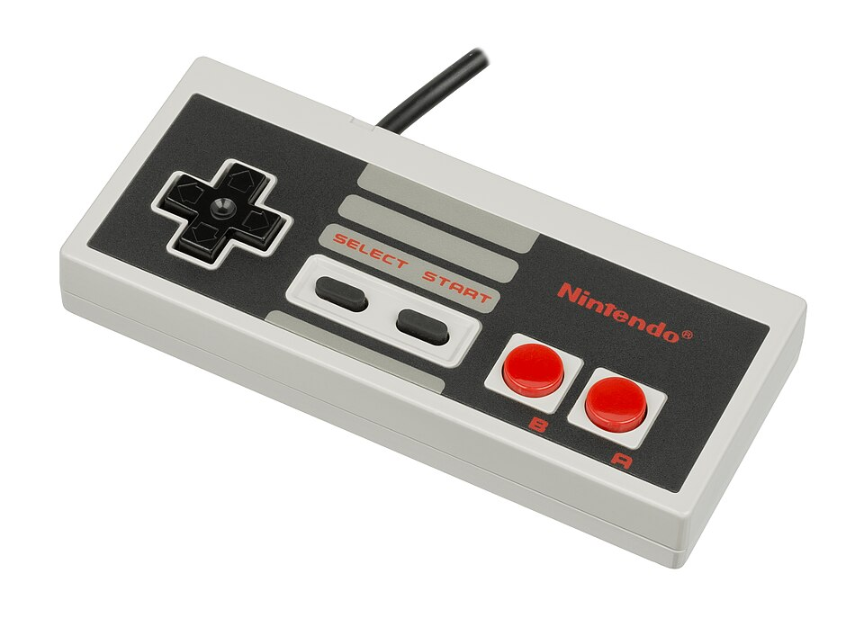
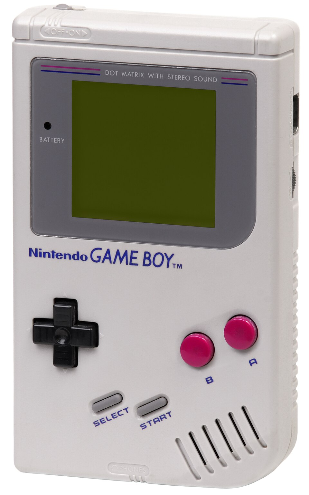
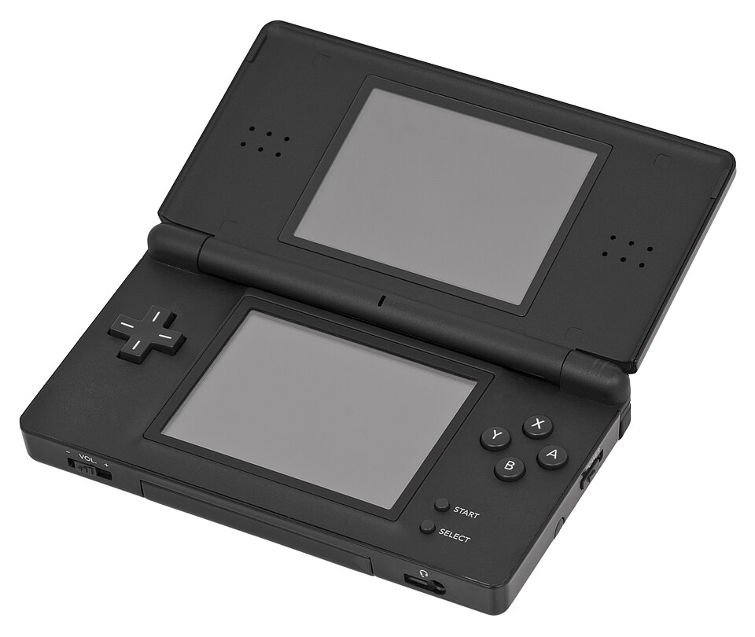
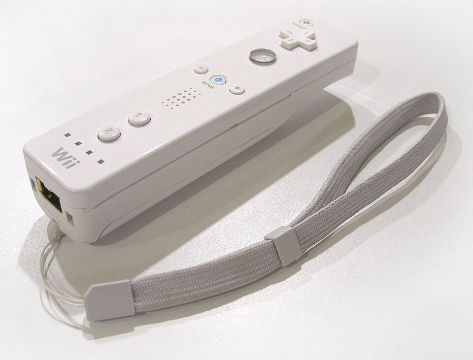
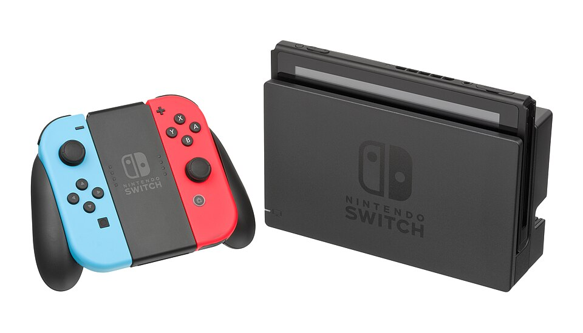
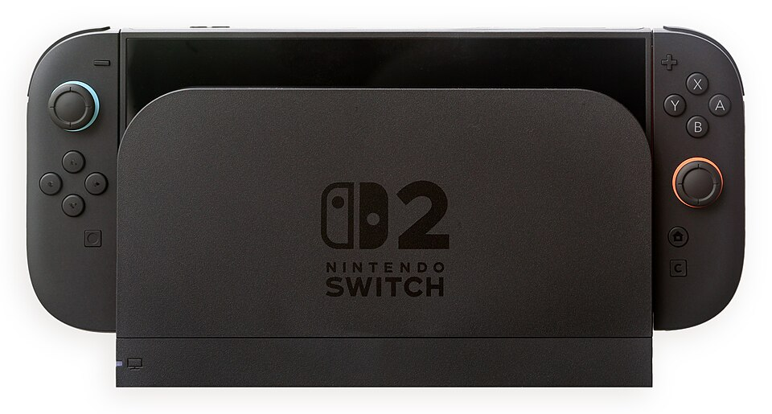

Se acopla solo
Los imanes indican dónde va cada mando y evitan errores al colocarlo.
La consola de mandos que se pegan y se convierten en ratón

Foto: Crisco 1492, Wikimedia Commons (CC BY-SA 4.0).
La Nintendo Switch 2 es una consola de videojuegos que se puede usar de tres maneras: sobre una mesa con los mandos separados, en la mano como una tableta o conectada a la televisión.
Lo que la hace especial para la Interacción Persona-Ordenador son sus mandos, los Joy-Con 2. Se pegan a la pantalla con imanes, se sueltan con un botón y uno de ellos se puede apoyar en la mesa y usar como ratón. Salió a la venta el 5 de junio de 2025, por unos 450 $.
La consola no tiene una sola forma de manejarse, sino varias que se pueden combinar:

Foto: Crisco 1492, Wikimedia Commons (CC BY-SA 4.0).
Es un dispositivo que se usa a diario, y que aplica varias ideas de la asignatura en un producto muy cotidiano.
Los imanes indican dónde va cada mando y evitan errores al colocarlo.
El usuario siente en la mano lo que ocurre en la pantalla.
Portátil, sobremesa o en la tele: cada persona elige la que le resulta más cómoda.
Un mismo objeto sirve para dos tipos de entrada, y cada uno es mejor para un tipo de juego.
Poder separar los mandos permite jugar en la postura que mejor venga, aunque la consola no garantiza que sea accesible para todos.
Salió en 2025 y es la última generación de consolas de Nintendo.
La Switch 2 recoge ideas de casi todas las consolas de Nintendo anteriores y las junta en un solo aparato. Cada una resolvió un problema del mando que había antes.
| Tipo | Dispositivo | Época | Qué aportó | Limitación |
|---|---|---|---|---|
| Mandos clásicos | Joystick de Atari 2600 | 1977 | Controlar el juego con una palanca y un botón | Muy pocas acciones posibles |
| Mando de NES | 1983-1985 | La cruceta, que se maneja con el pulgar | Atado a la tele y a un cable corto | |
| Portátiles | Game Boy | 1989 | Jugar en cualquier sitio | Pantalla monocroma y sin tacto |
| Nintendo DS | 2004 | Pantalla táctil con lápiz | Pantallas pequeñas | |
| Movimiento | Wii Remote | 2006 | Mando que detecta el movimiento y apunta a la pantalla | Hay que mover mucho el brazo |
| Consolas híbridas | Nintendo Switch | 2017 | Consola que es portátil y de sobremesa, con mandos separables | Mandos pequeños y que se sueltan con deslizadores |
| Nintendo Switch 2 | 2025 | Mandos magnéticos, modo ratón y pantalla de 120 Hz | Batería corta y precio más alto |

Foto: Evan-Amos, Wikimedia Commons (dominio público).

Foto: Evan-Amos, Wikimedia Commons (dominio público).

Foto: Evan-Amos, Wikimedia Commons (dominio público).

Foto: Evan-Amos, Wikimedia Commons (CC BY-SA 3.0).

Foto: Greyson Orlando, Wikimedia Commons (dominio público).

Foto: Evan-Amos, Wikimedia Commons (dominio público).

Foto: Crisco 1492, Wikimedia Commons (CC BY-SA 4.0).
¿Qué te parece un mando que también funciona como ratón? Rellena el formulario. Es solo una demostración: no hay servidor y los datos no se guardan; al enviarlo, el navegador los añade a la dirección de la página.